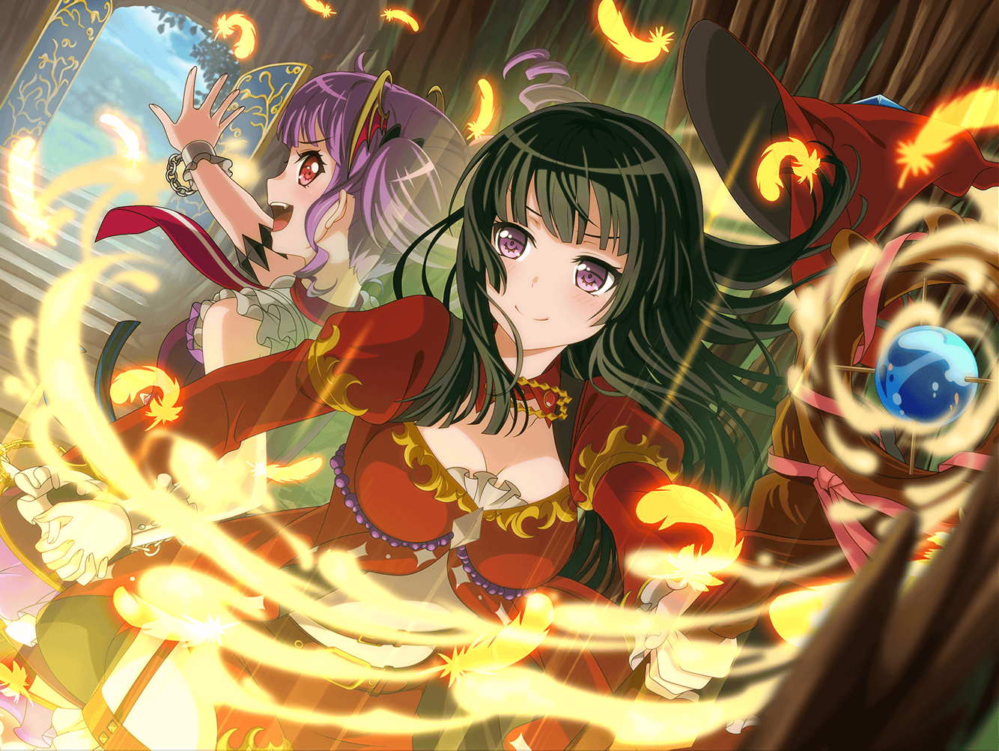

アゼミチ村道
リサ
鉱山って結構離れてるんだね。
一瞬で行けるものかと思ってた
RinRin
移動スキルもあるんですけど……制約もあるので
このぐらいの距離なら歩いた方が効率がいいんです
リサ
んー……？
現実世界で例えるなら、ちょっと離れたところまで行くのに
タクシーを使わずに歩きで行く……みたいな？
RinRin
そんな感じです（*´▽`*)
リサ
ゲームの世界でも節約って必要なんだね。
そういうところは結構シビアなんだ
RinRin
NFO、というかオンラインゲームは基本的に現実世界と
あまり変わらないと思います。
モンスターがいたり便利な魔法があったりしますけど……
リサ
でも、節約するとこは節約して、
協力するとこは協力してっていうのは現実世界と同じだよね
RinRin
そうですね。
それぞれの職業に得意なこと不得意なことがあるからこそ、
みんなで力をあわせて進んでいくんですよ
リサ
そう考えると、燐子がこうやってゲームにはまってるの意外かも。
ほら、燐子ってみんなと何かをするの得意じゃないのかなって
思ってたからさ
RinRin
だから、ウィザードを選んだんです……
リサ
え……？
どういうこと？
RinRin
今井さんの言う通りわたし、誰かと何かをするの苦手で……
ウィザードって攻撃も回復もできるし補助魔法も使えるから、
一人で遊ぶのに向いてる職業なんです
RinRin
さすがにボスは倒せないことも多いんですけど……
簡単なクエストとか、そういうのはひとりでできる職業だから
ウィザードになったんです
RinRin
一人で遊んでいたとき、通りすがりに回復魔法をかけてくれる
ことがあって、でも、そういうときお礼を言いたいけど、
どうしていいかわかんなくて……
RinRin
だから、なるべくプレイヤーの少ない地域で遊んでたんです。
ずっと一人で遊べる場所があればいいのにって思ってました
リサ
ええ〜そうなんだ……
でもさ、今はあこと一緒にやってるんだよね？
RinRin
はい。あこちゃんと出会ってから、ゲーム内で知り合いが
増えていって、協力プレイにも慣れてきて
キーボードを打つのも速くなったんです
リサ
あ、最初から速かったわけじゃないんだ！
RinRin
ひとりのときはキーボードを使うことが
ほとんどなかったので、
遅かったんです(；´Д`A
RinRin
協力プレイって魔法を使うタイミングとかもちゃんとやらないと
いけないから、最初は戸惑ってばかりでひとりに戻りたいって
思ってました
RinRin
でも、あこちゃんがいつもわたしのことを気にかけてくれて、
まずはふたりでの協力プレイに慣れようって
言ってくれたんです
RinRin
あこちゃんと一緒にボスとか倒せるようになって、
あこちゃんの入ってるギルドに入れてもらって、それで
ギルドチャットしているうちにいつの間にかこのスピードに……
リサ
なるほど〜。
あことの出会いがゲームの楽しみ方を変えたってことね
RinRin
はい。はじめは、ゲームだけでした。
でも、あこちゃんは現実でも
わたしの世界を変えてくれたんですよ
RinRin
あこちゃんがいたから、わたしはRoseliaに入れたし、
Roseliaに入れたから、衣装を作ることができたし……
RinRin
あこちゃんのおかげで、
わたしは知らない世界を
たくさん知ることができたんです
リサ
そっか、あこがいなければ燐子は
Roseliaのメンバーじゃ
なかった可能性もあるわけか……
RinRin
そうなんですよo(´∀`o三o´v`)o
全部あこちゃんのおかげです
リサ
そう考えると、たかがゲームなんて言えないね〜。
このゲームを燐子とあこがやってなかったら
アタシ達は、バンドを組んでないかもしれないんだもん
RinRin
ですです(・ω・*)(．_．)(・ω・*)(．_．)
全ての始まりはNFOなんですよ
RinRin
あこちゃんは、
いつもわたしを新しい場所へと導いてくれるんです。
だから、感謝感謝の感謝なんです(*'-'*)
リサ
あこはあこで、燐子がいつも助けてくれるって言ってたけどね。
ゲームでもバンドでも
リサ
練習で失敗しても、燐子がいてくれるだけで安心して
あんまり落ち込まなくて済むってさ
RinRin
あこちゃんに、そんなふうに思ってもらえるのうれしいです。
わたしのほうが助けられてばかりだけど……
RinRin
だけど、そう思ってくれてるってことは
あこちゃんの力になれてるってことですよね
リサ
そりゃそうだよ〜。
なんかさ、いいね。
お互いがお互いを支え合ってるみたいで☆
RinRin
まだまだ、わたしのほうが支えてもらってると思いますけど……
でも、いつかは支え合えればいいなって……
RinRin
ゲームの世界でも、現実の世界でも、
あこちゃんが困ってたり大変だったりしたら
すぐに助けられるような存在になりたいです
リサ
燐子って、そんなふうに思ってたんだ。
いつも、あんまりしゃべらないからあこに対して
そこまで考えてるなんて思わなかったよ
リサ
現実でも、これぐらいいっぱい
話してくれればいいのに♪
RinRin
それは難しいです((´д`υ))
リサ
でもさ、あこもそういう燐子の気持ちを
知りたいんじゃないかなー？
リサ
チャットでもいいけど、
言葉で伝えてもらえるのは嬉しいと思うな
RinRin
がんばります……
リサ
ま、アタシは今、
こうやって燐子とチャットするのおもしろいけどね〜
リサ
チャットだから、普段聞けない燐子の気持ちを
聞けたわけだし
RinRin
(..*) オハズカシイ……
リサ
そういう顔文字もさ、
燐子が使うとギャップがあってすっごくいいよ！
RinRin
((^┰^))ゞ ﾃﾍﾍ
RinRin
今井さんはあまり顔文字を使わないんですか？
リサ
あんま使わないかな〜。
ほとんどスタンプで済ましちゃうからね
リサ
でも、燐子みたいに色々な顔文字使えたら楽しいだろうなー
RinRin
顔文字を作って辞書登録しておくと便利ですよ！
いつでも色々な顔文字が出せます。
こんなふうにﾋﾞｰﾑ(!!・∀・σ)σ
リサ
あはは、カワイイね。そのビームのやつっ！
RinRin
見た目がカワイイので
お気に入りなんです(*'ω' *)
……使いどころがわからないんですけど
リサ
なんか今の燐子、すっごく輝いてる気がする。
楽しんでるのが伝わってくるもん
リサ
現実世界でも、そういう燐子が見たいなー
これが終わったらさ、
カフェでおしゃべりでもしない？
RinRin
工工エエェェェェｪｪｪ(ﾟДﾟ)ｪｪｪェェエエエ工工
リサ
そしたらさ、さっきみたいに
燐子の気持ちを色々教えてよ。
ね？
RinRin
いきなりは無理かもしれないけど……
がんばってみます(｡+･｀ω･´)